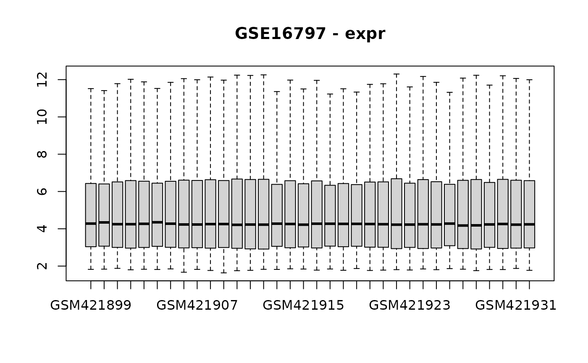
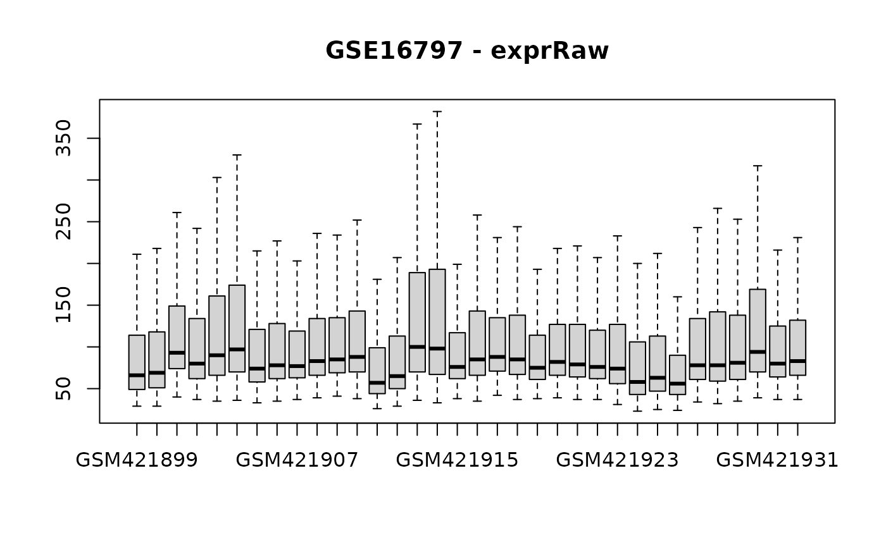

microarray_analysis
microarray_analysis.Rmd
accession <- "GSE16797"
# Get GEO data
gse <- MetaIntegrator::getGEOData(accession)
#> Setting options('download.file.method.GEOquery'='auto')
#> Setting options('GEOquery.inmemory.gpl'=FALSE)
#> Found 1 file(s)
#> GSE16797_series_matrix.txt.gz
#> Length Class Mode
#> GSE16797 1 -none- list
#> [1] "GSE16797_series_matrix.txt.gz"
# Get GEO supplemental data, including raw data, and process
## withr used to create a tempdir for supplemental files for purpose of demo
withr::with_tempdir({
getSuppFiles(accession)
reprocess_output <- processAffy(sprintf("./%s", accession))
# # Alternatively, can use `processAgilent` for Agilent platform
# reprocess_output <- processAgilent(sprintf("./%s", accession))
})
#> Warning: replacing previous import 'AnnotationDbi::tail' by 'utils::tail' when
#> loading 'hgu133plus2cdf'
#> Warning: replacing previous import 'AnnotationDbi::head' by 'utils::head' when
#> loading 'hgu133plus2cdf'
#>
#> Background correcting
#> Normalizing
#> Calculating Expression
# Add raw and reprocessed expression matrices to original MetaIntegrator
# GEO object
gse <- addRawExprMatrix(gse, reprocess_output$raw_expression)
gse <- addReprocessedExprMatrix(gse, reprocess_output$normalized_expression)
# Visualize effect of processing
geoAllBoxplots(gse)